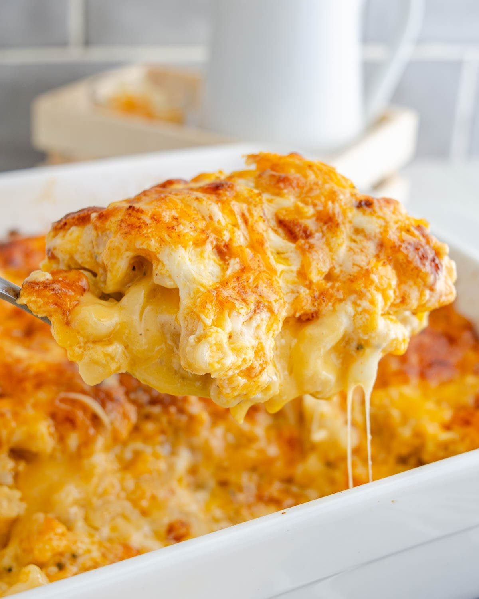
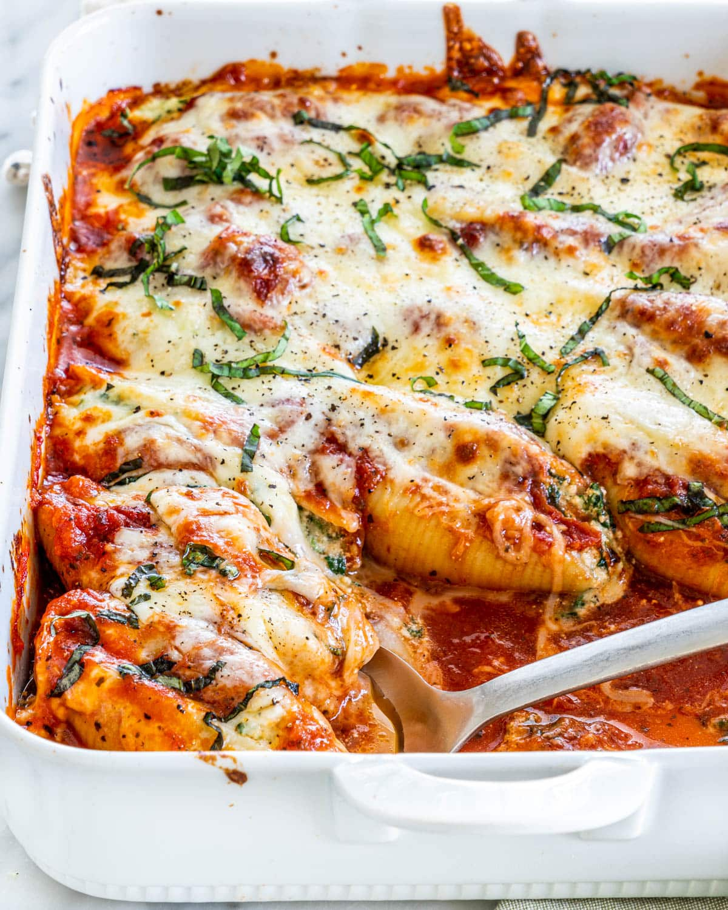
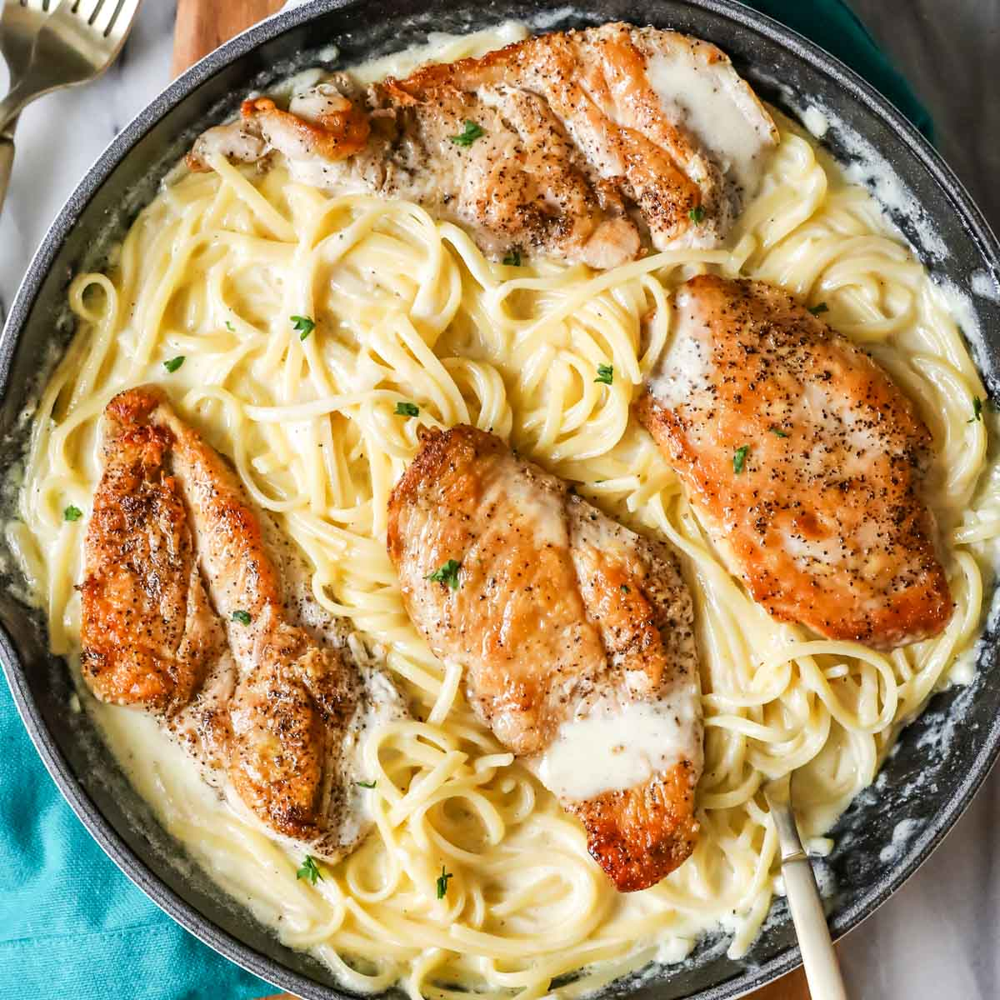

The reason it says felines and not just "black panther" is because I love all every kind of cat. I just couldnt decide on which feline to go with, whether that be one of my cats, a tiger, etc. So I chose this rare patterned black panther.
Top Five pastas
Baked Mac & Cheese

Penne Alla Vodka
Stuffed Shells

Chicken Alfredo

Lasagna
I am the biggest big back when it comes to pasta. I love it all. If none of yall have been to "Capo's" down in Nob Hill, I reccomend going and ordering some pasta. I am the plug for all the good pasta spots in the city hmu.